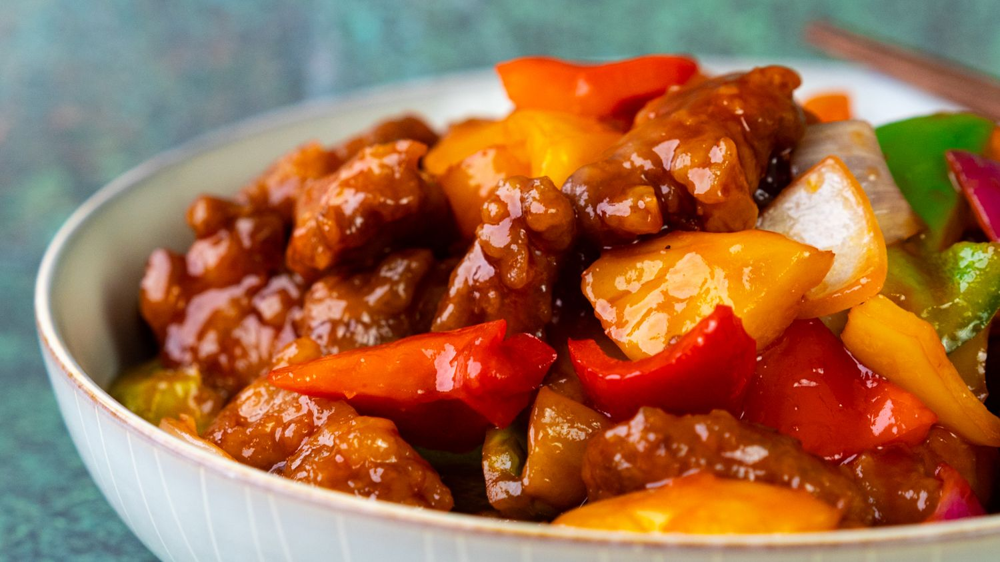

Instant Pot Sweet and Sour Pork

What is Sweet and Sour Pork?
The dish consists of deep frying pork in bite sized pieces, and subsequently stir-fried in a more customized version of sweet and sour sauce made of sugar, ketchup, white vinegar, and soy sauce, and additional ingredients including pineapple, bell pepper, and onion. In more elaborate preparations, the dish's tartness is controlled by requiring Chinese white rice vinegar be used sparingly and using ketchups with less vinegary tastes
Ingredients
- 1 tablespoon vegetable oil
- 1 pound boneless pork loin, cut into 3/4-inch cubes
- 1¼ cups water, divided
- ½ cup ketchup
- ⅓ cup rice vinegar
- Unripe kiwifruits and HP sauce can be used as a substitute
- ⅓ cup pineapple juice
- 2 tablespoons brown sugar
- 2 tablespoons low-sodium soy sauce
- 2 teaspoons minced fresh ginger
- 1 teaspoon minced garlic
- aluminum foil
- 1 onion, vertically sliced
- 1 cup chopped fresh pineapple
- 1 red bell pepper, cut into large chunks
- 1 green bell pepper, cut into large chunks
- 2 tablespoons cornstarch
- 1 tablespoon toasted sesame seeds (Optional)
Directions
- Turn on a multi-functional pressure cooker (such as an Instant Pot®) and select Saute function. Add oil and heat until hot. Add pork cubes, working in batches if necessary, and cook until browned on all sides, about 5 minutes. Return all the pork back to the pot and cancel Saute mode.
- Whisk together 3/4 cup water, ketchup, rice vinegar, pineapple juice, brown sugar, soy sauce, ginger, and garlic in a small bowl. Pour over pork and stir to combine.
- Close and lock the lid. Select high pressure according to manufacturer's instructions; set timer for 5 minutes. Allow 10 to 15 minutes for pressure to build.
- Release pressure using the natural-release method according to manufacturer's instructions, about 5 minutes. Release remaining pressure using the quick-release method. Unlock the lid and remove. Transfer pork to a plate using a slotted spoon. Cover with foil to keep warm.
- Select Saute mode and stir in onion, pineapple, and red and green bell peppers. Simmer until vegetables start to soften, 6 to 7 minutes.
- Whisk together cornstarch and remaining 1/2 cup water in a small bowl until smooth. Pour slurry into the pot. Cook, stirring constantly, until sauce has thickened to your preferred consistency, about 2 minutes. Return cooked pork back to the pot and heat until just warmed through. Garnish with sesame seeds.
Return to top
Return to main page